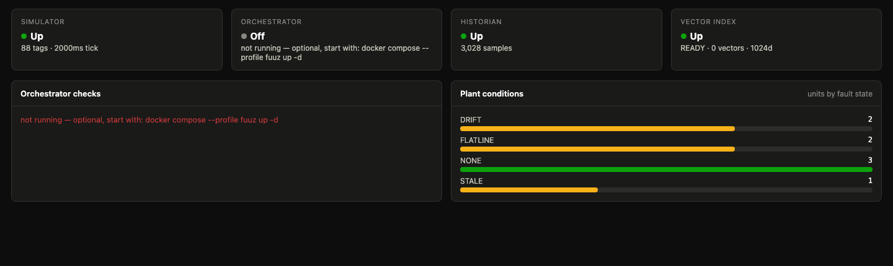

A plant, a historian and a Fuuz-shaped API on your laptop.
The ACE Docker Simulator runs a live OPC UA plant, records it into a MongoDB time-series historian, and serves it through a GraphQL API that speaks the same dialect as the Fuuz platform — so what you build against it ports to a real tenant unchanged.
git clone https://github.com/Fuuz-Platform/ace-docker-simulator && cd ace-docker-simulator && docker compose up -d
http://localhost:8081
No configuration. No account. No tenant required.
What runs
Five containers start by default. Two more are opt-in, because they need something only you can supply.
ace-sim :4840 · :4841
An OPC UA server any client can browse and subscribe to. Eight units × eleven signals — process, discrete, counter, enum and string — with rotating fault states (COMMS, STALE, FLATLINE, DRIFT) that emit real OPC UA status codes rather than merely looking wrong.
ace-mongo :27017
MongoDB with the mongot search binary bundled, which is what provides
$vectorSearch. Plain community server does not ship it.
ace-graphql :8098
A Fuuz-shaped API over Mongo — edges/node, where:{f:{_eq}},
upsert<Model>(payload:[…]) — plus the historian query surface.
ace-bridge :4842
The fidelity writer. Real OPC UA subscriptions with deadband, and a stored sample on every quality edge.
ace-ui :8081
The operations console. React behind nginx, which reverse-proxies every service under
/api/* — same-origin by construction, so there is no CORS anywhere.
ace-loadgen profile: load
The volume writer. Straight to Mongo, because a per-sample GraphQL hop bottlenecks long before the database does — which is also how real collectors work.
ace-orchestrator profile: fuuz
ACE itself: deterministic matching and signal classification against a live Fuuz tenant. Needs a host, a tenant and a token, so it stays off by default.
The console
Plant state, historian throughput and fault distribution, thirty seconds after the clone.

A historian, not a table of numbers
Most "historian" demos store a timestamp and a float. That model quietly lies about a real plant in five specific ways, and each one is fixed here.
| Capability | Why it is not optional |
|---|---|
| Quality on every sample | Bad samples are stored, not dropped — discarding them hides outages and makes coverage a lie. Aggregates exclude them and report badSamples separately. |
| Two timestamps | Source time and receive time. The difference is late arrival: gateway store-and-forward replays hours-old samples out of order after a WAN outage, and latencyMs makes that visible. |
| Typed values | Running=1 and Speed=1.0 are not the same kind of fact. Process is float, discrete is bool, enum is int, batch context is string. |
| Interpolation per tag | Continuous tags interpolate; discrete tags are step functions. Linear interpolation of a state signal invents states that never happened. |
| Time-weighted aggregates | Exception-based samples are irregular, so an arithmetic mean over-weights whatever happened to be sampled often. Continuous tags get a time-weighted mean; discrete tags get state durations and transition counts. |
121.332 where the time-weighted mean reads
121.589 — and for a discrete tag the honest answer is not a mean at all,
it is ON 143s / OFF 37s, 79.7% on-fraction, 6 transitions.
Measured, not estimated
Numbers from a sustained run on an Apple M5 Max. Reproduce them with
docker compose --profile load up -d.
Quick start
Docker is the only prerequisite.
-
Clone and start
Five containers, no configuration file, nothing to sign up for.
# the plant, the historian, the API and the console git clone https://github.com/Fuuz-Platform/ace-docker-simulator cd ace-docker-simulator docker compose up -d -
Open the console
localhost:8081 — the plant is already running and the bridge is already recording it.
-
Ask the historian something
The behavioural statistics that drive signal classification are computed in the database, so the client never streams raw history.
curl localhost:8098/graphql -H 'content-type: application/json' -d '{ "query": "{ historianStatus { name status count } }" }' -
Optional — point ACE at a live Fuuz tenant
Copy
.env.exampleto.env, fill in your host, tenant and token, then bring up thefuuzprofile.cp .env.example .env docker compose --profile fuuz up -d